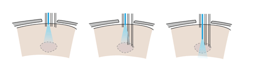

If independent adjustment of the fiber depth throughout the experiment is desired, one or more small diameter fibers (~125μ) can be inserted in place of electrodes and can be lowered using the same spring-driven mechanism. We found larger diameter fibers not sufficiently flexible for this method.
In this design, the fiber is lowered into a guide tube and glued to the spring in place of a shuttle tube. The free upper end of the fiber with the ferrule connector (extending ~2 cm past the spring) is then looped around and fixed perpendicular to the electrode interface board using epoxy. This free loop provides enough flexibility for the fiber to move up and down. If desired, electrodes can be glued to the fibers at constant depth offset. In practice, we find that attaching 2 ferrules to the electrode interface board is straightforward, though in principle up to 16 fibers could be attached.

This variant of the flexDrive enables researchers to precisely position optical fibers to electrically identified target areas, or to compare optical manipulation of neural activity in different positions in the same animal. Further, this method enables the collection of optical signals from fluorescent probes while simultaneously recording extracellularly.